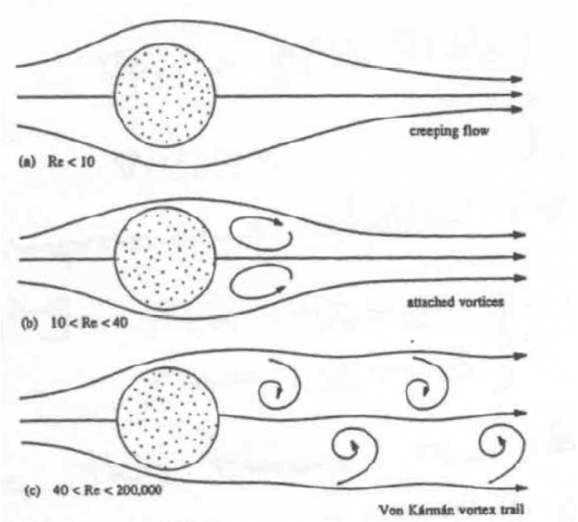
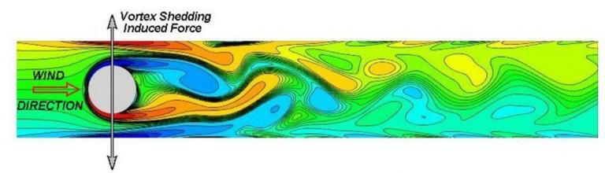
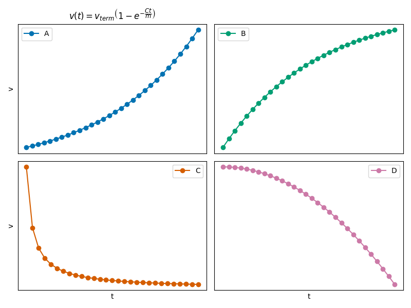

Day 06 - Making Classical Models#

Plane Polar Coordinates Warm-Up#
We introduced plane polar coordinates (\(r,\phi\)). For any position vector, \(\vec{R}\), we can write:
where \(r\) is the magnitude of \(\vec{R}\), and \(\hat{r}\) is the radial unit vector.
Find \(\dot{\vec{R}} = \frac{d\vec{R}}{dt}\). Get as far as you can. Our answer will be in terms of \(\hat{r}\) and \(\hat{\phi}\).
Remember the chain rule and Cartesian unit vectors are fixed in space/time
\(\hat{r} = \cos(\phi)\hat{x} + \sin(\phi)\hat{y} \qquad \hat{\phi} = -\sin(\phi)\hat{x} + \cos(\phi)\hat{y}\) \(\frac{d}{d\phi} \cos \phi = -\sin \phi \qquad \frac{d}{d\phi} \sin \phi = \cos \phi\)
Announcements#
Homework 2 is due Friday (late Sunday)
Homework 3 is now posted
Office hours, for now (Mihir-MN; Danny-DC):
Thursday 3-5pm (MN, 1248 BPS)
Friday 10-12pm (DC, 1248 BPS)
Friday 3-5pm (MN, Zoom only)
Zoom Link for class: https://msu.zoom.us/j/99550311023
password:
phy321msu
Seminars this week#
WEDNESDAY, January 28, 2026
Astronomy Seminar, 1:30pm, BPS 1400 & Zoom Speaker: Rebecca Kyer & Emily Elizondo, MSU Title: TBA Zoom Link: https://msu.zoom.us/j/93334479606?pwd=OtIXPWhRPBfzYu53sl3trSJlaBYI7C.1 Passcode: 825824
Seminars this week#
WEDNESDAY, January 28, 2026
Physics Education Research Seminar, 3:00pm, BPS 1400 & Zoom Speaker: Jennifer Doherty, MSU Title: Principle-based reasoning: A strategy for developing expertise in Physiology Zoom Link: https://msu.zoom.us/j/96470703707 Passcode: PERSeminar
Seminars this week#
WEDNESDAY, January 28, 2026
FRIB Nuclear Science Seminar, 3:30pm, Zoom Only Speaker: Gwen Grinyer, University of Regina Title: Precision Spectroscopy of Rare Isotopes Zoom Link: https://msu.zoom.us/j/91051885898?pwd=S423bks5tzaeOwNb1tLaUaHDUScm5A.1 Passcode: 949110
Seminars this week#
FRIDAY, January 30, 2026
QuIC, Seminar, 12:40 p.m., BPS 1300 & Zoom Speaker: Ben DalFavero, MSU Title: Fault tolerant quantum computing II *For the full schedule, please see: https://sites.google.com/msu.edu/quic-seminar/ or for more information, please reach out to Ryan LaRosa directly
Seminars this week#
FRIDAY, January 30, 2026
IReNA Online Seminar, 2:00 pm, Zoom Light refreshments at 1:50pm in 2025 Nuclear Conference Room - FRIB Hosted by: Aldana Grichener (University of Arizona & Observatory) Speaker: Mengke Li, University of California, Berkeley Title: Implications of a Weakening N = 126 Shell Closure Away from Stability for r-Process Astrophysical Conditions Zoom Link: https://msu.zoom.us/j/827950260 Password: CENAM
Goals for Week 3#
Be able to answer the following questions.
What is Mathematical Modeling?
What is the process for analyzing these models?
Be able to solve “Simple” Motion Problems with Newton’s Laws.
Modeling Video#

What is your experience with modeling?#
Take 2-3 min to think about your prior physics classes#
What models have you used? What makes that a model?
What made a that model good or not so good?
What kinds of things could you do to make a better model?
Vortex Shedding#
At higher Reynolds numbers, flow around objects becomes unstable.
This instability can lead to the formation of vortices.
This “shedding” of vortices can lead to vibrations and noise.
Model of vortex shedding behind a cylinder#
Controlling vortex shedding is important in many engineering applications.

Giosan, Ioan, and P. Eng. "Vortex shedding induced loads on free standing structures" Structural Vortex Shedding Response Estimation Methodology and Finite Element Simulation 42 (2013).
Renewables: Wind Turbines#
Thorntonbank Wind Farm#
North Sea off the coast of Belgium#
Notice the cylindrical shape of the support structure.

Clicker Question 6-1#
The SHO is a useful model: \(m\ddot{x} = -kx\).
Assume the restoring force is anti-symmetric about the equilibrium position, what is the next term model?
\(\sim x^2\)
\(\sim x^3\)
\(\sim x^4\)
\(\sim x^5\)

Clicker Question 6-2#
Assuming a linear model for Air Resistance \(\sim bv\), we obtained this EOM for a falling ball:
What happens when \(\ddot{y} = 0\)?
The ball stops moving (\(v = 0\)).
The ball reaches a velocity of \(mg/b\).
The ball reaches a terminal velocity.
I’m not sure.
Clicker Question 6-3#
For the system of Linear Drag in 1D, we found a solution for the velocity as a function of time, with \(v = 0\) at \(t = 0\). $\(v(t) = v_{term}\left(1-e^{-\dfrac{bt}{m}}\right)\)$
where \(v_{term} = \sqrt{\frac{mg}{b}}\).

CQ 6-3#
Which sketch could be correct for the velocity of the ball?
Clicker Question 6-4#
For the system of Quadratic Drag in 1D, we found a solution for the velocity as a function of time, with \(v = 0\) at \(t = 0\).
where \(v_{term} = (mg/c)^{1/2}\). Do the units make sense? What are the units \(\left[gt/v_{term}\right]\)?
Yes,\(v\) and \((mg/c)^{1/2}\) have the same units; the units for \(\left[gt/v_{term}\right]\) are m/s.
No, \(v\) and \((mg/c)^{1/2}\) have different units; the units for \(\left[gt/v_{term}\right]\) are m/s.
Yes, \(v\) and \((mg/c)^{1/2}\) have the same units; the units for \(\left[gt/v_{term}\right]\) are unit-less.
No, \(v\) and \((mg/c)^{1/2}\) have different units; the units for \(\left[gt/v_{term}\right]\) are unit-less.
Clicker Question 6-5#
For the system of Quadratic Drag in 1D, we found a solution for the velocity as a function of time, with \(v = 0\) at \(t = 0\).
where \(v_{term} = \sqrt{mg/c}\). What happens when \(t \rightarrow \infty\)?
The object stops moving.
The object travels at a constant velocity.
The object travels at an increasing velocity.
The object travels at a decreasing velocity.
I’m not sure.